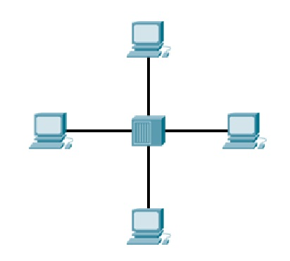
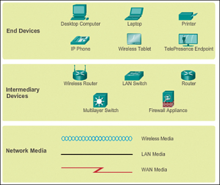

Networking មូលដ្ឋាន¶
Note
ដោយសានៅក្នុងភាសខ្មែរ មានពាក្យខ្លះបកពីភាសាគេ ដែលភាកច្រើនជាពាក្យបច្ចេកកទេសនោះ គឺមានការពិបាកនឹងយល់ជាងនឹងយកពាក្យ (ឃ្លា) របស់គេមកប្រើ។ ដូច្នេះខ្ញុំសូមប្រើពាក្យនោះតែម្ដង ជាជាងបកប្រែ។ ហើយខ្ញុំក៏សូមអភ័យទោសផងបើមានការខុសឆ្គង! យើងខ្ញុំនឹងទទួលពាក្យទូន្មាន និងមតិយោបល់ពីប្រិយមិត្តអ្នកអាន តាមរយៈ amcnith@gmail.com
តើអ្វីទៅជា Network?¶
A computer network គឺជាប្រពន្ធ័នៃការតភ្ជាប់device(ឧបករណ៍)រវាងគ្នាក្នុងគោលបំណងបង្កើតទំនាក់ទំនង ឫក៏ចែកចាយresources(ធនធាន ដូចជា files, printer,…) និង សេវាកម្ម(services) ដោយប្រើប្រាស់common standard (ស្តង់ដារួម) ហៅថា protocol។
- ផ្ដល់អោយយើងមានភាពងាយស្រួលដូចជា៖
- ទំនាក់ទំនង
- ការសិក្សា
- ការងារ
- ការកំសាន្ដ
ក្រលេកមកមើលឧទាហរណ៍ខាងក្រោម៖

នៅក្នុងរូបខាងលើ យើងឃើញមានកុំព្យូទ័រចំនួនពីរតភ្ជាប់គ្នាដោយប្រើប្រាស់ខ្សែ(cable)។ ទំរង់Networkដ៏តូចមួយនេះអាចប្រើសំរាប់ផ្លាស់ប្ដូរ(exchange)ទិន្នន័យរវាងគ្នាបាន។
ចំនែកឯនៅក្នុងរូបនេះវិញ គឺមានកុំព្យូទ័រច្រើនតភ្ជាប់គ្នា ដោយប្រើHub ឫក៏Switchជាចំនុចកណ្ដាលដែលអាចពង្រីកទំរង់Networឪ្យធំជាងមុន។
ធាតុផ្សំនៃNetwork៖
សូមអ្នកកុំអាលបារម្ភបើមិនទាន់យល់អ្វីទៅជា Hub? Switch? ខ្ញុំនឹងបកស្រាយពន្យល់ជាបន្តបន្ទាប់បន្តិចទៀតនេះ។
គំរូ(model) OSI & TCP/IP¶
OSI model¶
OSI (Open Sysatems Interconnection) model ត្រូវបានបង្កើតឡើងដោយប្រពន្ធ័ស្តង់ដាអន្តរជាតិ (International Organization for Standardization: OSI)។
TCP/IP model¶
TCP/IP (Transmission Control Protocol/Internet Protocol) model ត្រូវបានបង្កើតឡើងនៅទសវត្សឆ្នាំ ១៩៧០ ដោយ DARPA(Defense Advance Research Project Agency)។